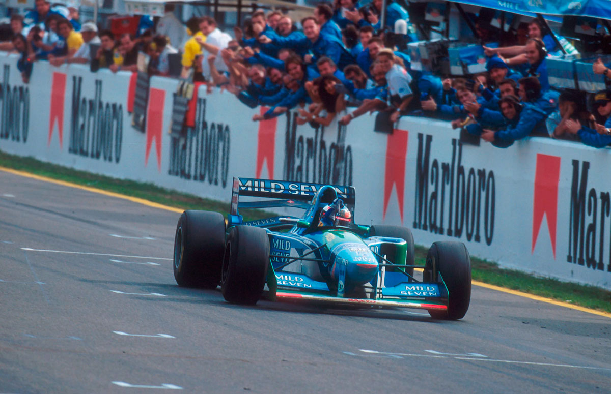
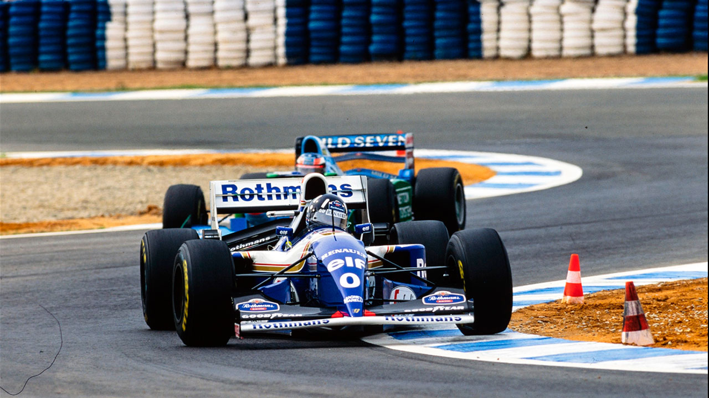

Jerez de la Frontera - 16/10/1994
LIÇÃO NA PISTA E NO BOX

Schumacher volta com vitória e recupera a liderança para a equipe Benetton. Hill perde na pista e nos reabastecimentos. Mansell decepcionou em seu retorno. Frentzen brilha. Hakkinen alcançou o quarto pódio consecutivo. Barrichello teve um pneu furado. Irvine conquistou um excelente quarto lugar, seu melhor resultado. Katayama também se destacou. Muitas mudanças nas equipes.
Francisco Santos
É natural que Michael Schumacher estivesse ainda mais radiante do que o habitual após sua vitória. Foi uma conquista muito especial, que provou aos seus detratores que sua vantagem na pista não estava relacionada a eventuais irregularidades técnicas em seu carro ou sistema de reabastecimento. Schumacher demonstrou que possui habilidade excepcional e que, comparando campeão por campeão, ele é muito mais do que Damon Hill. Durante a ausência forçada do alemão em dois Grandes Prêmios, Hill soube aproveitar bem e reduziu a diferença na tabela do mundial para apenas um ponto. No entanto, a vitória de Schumacher em Jerez recuperou a liderança de cinco pontos da equipe Benetton. Ficou claro em Jerez a superioridade da equipe Benetton e de Schumacher, mostrando mais uma vez um melhor senso estratégico do que a Williams. Embora seja inegável que Hill tenha sido vergonhosamente atrasado por De Cesaris, cuja saída da F1 será um alívio para os demais pilotos, não se pode negar que o inglês, mais uma vez, mostrou menos garra para lidar com o tráfego.
A equipe Benetton e Schumacher mostraram-se competentes tanto em termos técnicos de performance na pista, quanto na estratégia da prova. Durante a corrida, a equipe demonstrou ser mais rápida, independentemente do nível de combustível ou das condições dos pneus. Schumacher, por sua vez, fez uma parada cedo, antes de enfrentar os primeiros retardatários, permitindo-lhe ficar com pneus novos e sem o tráfego que Hill teve que enfrentar. Enquanto isso, Hill persistiu em sua estratégia inicial de apenas dois reabastecimentos, perdendo tempo ao invés de entrar no box na volta seguinte ao Benetton. Quando finalmente parou para abastecer, Hill perdeu 1,9s em relação a Schumacher e retornou à pista em segundo lugar, com mais gasolina e perdendo mais tempo em relação ao líder. Schumacher, imprimindo um ritmo rápido, ganhou vantagem sobre Hill e, a 17 voltas do final, fez seu terceiro reabastecimento sem perder a liderança. Hill, por sua vez, ficou preso volta e meia atrás de De Cesaris, o que o impediu de contestar a liderança de Schumacher.
Hill, que liderou as primeiras voltas, não conseguiu manter sua posição e ficou sem entender por que não conseguiu vencer o GP. A Williams certamente terá muito o que aprender com essa derrota. Além disso, este GP de Jerez foi o primeiro a atrair um grande público desde que os GPs de F1 começaram a ser realizados no circuito em 1986. Com mais promoção e interesse pelo campeonato, o número de espectadores foi significativamente maior do que nos anos anteriores.

OS TREINOS
A pista de Jerez, como muitas outras na Fórmula 1, teve que passar por modificações de segurança. Foram duas as modificações feitas ao traçado. A principal mudança ocorreu na Curva Ferrari, onde Martin Donnelly sofreu um grave acidente em 1990 devido à proximidade dos guard-rails. Para solucionar o problema, foi construída uma chicane que exige que os pilotos reduzam de 5ª para 1ª marcha na entrada da primeira perna para a esquerda. Logo após, eles saem mais rápidos em 2ª marcha para o final da antiga Ferrari e a reta antes do gancho que antecede a linha de chegada. Essa nova chicane recebeu o nome de Curva Ayrton Senna em homenagem ao lendário piloto brasileiro. A outra modificação foi na abordagem da Curva Sito Pons, que agora não conta mais com os antigos esses.
Sob um sol escaldante de 29°, os primeiros treinos livres não trouxeram surpresas nesta pista sinuosa. O recém-retornado, Schumacher, garantiu o melhor tempo, superando Hill por 0,57s. No entanto, é na tarde que a competição se acirra. Infelizmente, o Yamaha de Katayama quebrou logo no início da sessão, deixando um rastro de óleo na pista e prejudicando a maioria dos tempos. Porém, Frentzen já havia feito sua marca e garantiu a pole provisória. Mas a liderança não durou muito, sete minutos antes do final, Hill bateu o tempo de Frentzen, com Schumacher em terceiro e Rubinho em quarto. No sábado, a pista se mostrou ainda mais rápida, com uma diferença de 1,5s por volta. Na parte da manhã, Hakkinen começou liderando, mas foi Hill quem fez o melhor tempo do fim de semana, com 1m22,75s. Na classificação, entretanto, foi Schumacher quem garantiu a pole position. Apenas Alesi e De Cesaris não conseguiram melhorar em relação à véspera devido a acidentes logo no início da qualificação. Vale destacar o quarto lugar de Frentzen, o quinto de Rubinho e a natural subida de Herbert para o sétimo lugar no grid. Com tudo isso em jogo, a expectativa para a corrida era alta.
A CORRIDA
A pole position de Schumacher foi em vão, devido a um problema de embreagem. Mas, como dizia Jackie Stewart, "corrida não se ganha na primeira curva, mas se perde". Após o primeiro reabastecimento, o alemão já tinha uma vantagem de 5,8s sobre Hill. Até o final, foi uma verdadeira aula de pilotagem. Outro ponto de interesse deste GP era Mansell, que não correspondeu às expectativas. Embora mais magro do que em Magny-Cours, o britânico desapontou. No início, ele ficou parado, e disputou com Rubinho a posição. Seu Renault V10 passou, mas ele não conseguiu manter a posição. Na frente do segundo pelotão estavam Frentzen, a 20 segundos dos líderes na 10ª volta, e Mansell, incapaz de alcançá-lo com seu Williams-Renault, Rubinho, Berger e Irvine. O novato Noda também estava lá, tendo deixado o motor morrer na largada. Mansell tentou ultrapassar o japonês por dentro, mas acabou batendo com o bico do carro na traseira do Larrousse. O resultado foi uma volta perdida nos boxes. Quando voltou à pista, ele estava fora de ritmo (sua melhor volta foi 0,5s pior que Hill), e acabou saindo sozinho da pista, tirando a Williams do comando do mundial de construtores. Felizmente, Verstappen também saiu da pista, senão o prejuízo de Frank Williams teria sido ainda maior. Katayama também ficou parado no grid, com superaquecimento da embreagem e perdeu 30 segundos no início da corrida. Mesmo assim, o japonês lutou e acabou em sétimo lugar, a apenas 0,2s de Frentzen. Sua performance merecia ao menos um ponto na corrida. Já Frentzen fez uma ótima estratégia de apenas um reabastecimento e conseguiu ser rápido tanto nas primeiras voltas, com o carro mais pesado, quanto no final da corrida, com pneus desgastados.
Barrichello galgou para 4° na largada, após uma batalha intensa com Mansell. No entanto, seus freios traseiros começaram a bloquear e um furo o fez cair para o décimo terceiro lugar. Christian também não teve sorte: logo na primeira volta, perdeu a asa dianteira em um choque com uma Minardi. Após quatro paradas nos boxes, ele acabou em décimo sétimo. "Um dia para ser esquecido", lamentou. Por outro lado, Hakkinen teve um fim de semana satisfatório: na 25ª volta, já estava em terceiro lugar e, com duas paradas para reabastecimento, mesmo com a pressão inicial de Irvine, subiu ao pódio pela quarta vez consecutiva. Lá, ouviu uma piada de Schumacher sobre a dificuldade de ultrapassá-lo... Por fim, é digno de nota o último colocado, Domenico Schiattarella, que, após se classificar à frente dos dois Pacific, levou o Simtek até o final, mesmo ficando cinco voltas atrás de Schumacher. Mas, como em todo GP, há corridas e corridas...